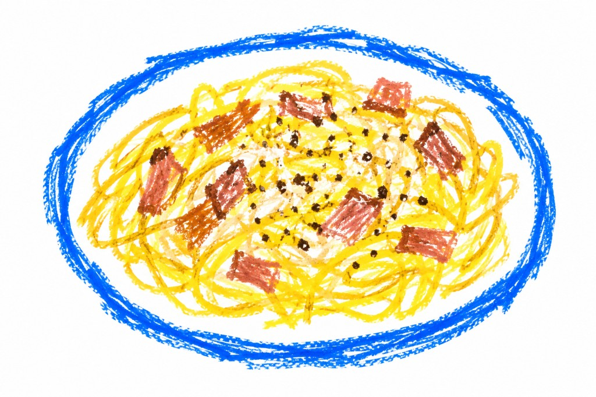

Carbonara
Ingredienti
- 400 g di spaghetti
- 150 g di guanciale
- 4 tuorli
- 100 g di pecorino romano
- Pepe nero
Preparazione
Taglia il guanciale a listarelle e fallo rosolare in una padella senza aggiungere olio.
Mescola i tuorli con il pecorino e aggiungi una generosa quantità di pepe nero.
Cuoci gli spaghetti in acqua salata e conserva un po' dell'acqua di cottura.
Scola la pasta, aggiungila al guanciale e lasciala intiepidire leggermente. Unisci la crema di uova e pecorino e amalgama con poca acqua di cottura.
← Torna alle ricette